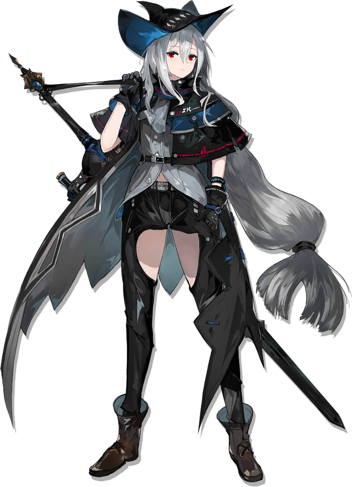

01 / DOSSIER
她不是传说，
只是习惯了独自承担。
在罗德岛的档案里，斯卡蒂是“赏金猎人”“深海猎人”“六星近卫”。在普通干员口中，她更像一场不能靠近的天灾。
打开完整档案
档案不会记录的是：她会坐在甲板边沿低声唱歌，会把家乡的歌谱留在信物里，也会在确认你足够执着之后，认真地说一句——“这样我不就只能老老实实保护你了吗。”
她拒绝大多数合作请求的理由只有一条：不希望给他人带来危险。所谓冷漠，是她能想到的、最笨拙也最温柔的保护方式。
- Origin
- 阿戈尔
- Race
- 未公开
- Combat Exp.
- 十三年
- Infection
- 非感染者
- Birthday
- 3 月 7 日
- Height
- 166 cm
02 / THREE FRAGMENTS
猎人、歌者，
以及一条归途。
如果只用一个词形容斯卡蒂，很容易把她弄丢。她身上同时存在着锋利的巨剑、低沉的歌声，和一个不知该往哪里去的背影。
03 / COMBAT SNAPSHOT
纯粹的强大，
也有它的代价。
高生命、高攻击、阻挡一人的无畏者。她不适合被放在每一条战线，却总能在最需要的地方，单独切开一个缺口。
阅读战斗手册E2 / LEVEL 90 / TRUST
- HP
- 3866
- ATK
- 1015+80
- DEF
- 263+40
- RES
- 0
精英二 90 级、满信赖、无潜能、无模组。详细数据与模组效果见战斗手册。
- S1迅捷打击·γ型稳定输出
- S2跃浪击空降单切
- S3涌潮悲歌站场强化
“不愿意和他人合作的人，往往是对自己的能力有所误判，但斯卡蒂显然不在此列。”
04 / VISUAL ARCHIVE
每一帧，
都是潮水的回声。
官方立绘、衣装与氛围印象。画面里的她，有时是猎人，有时只是一个在海边发呆的人。
进入影像档案
01 / 05